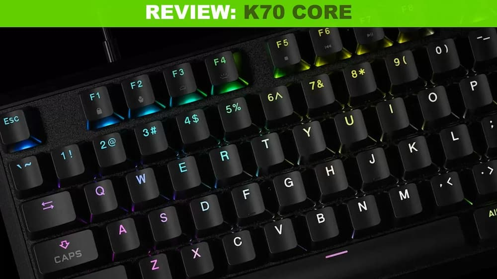
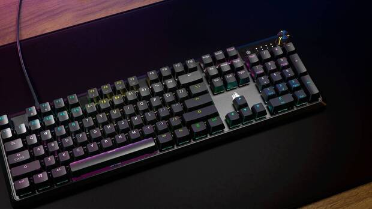
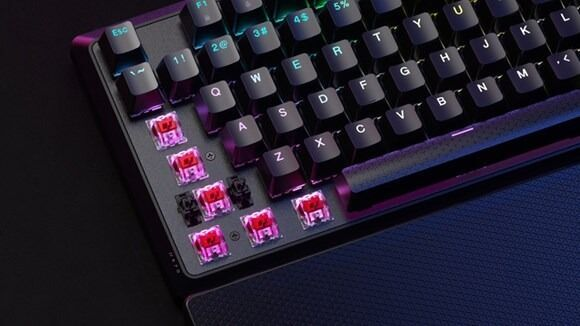
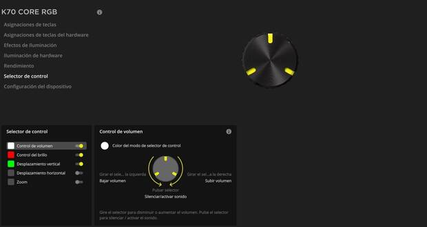

Análisis K70 Core: Un teclado muy satisfactorio para los jugadores
Probamos el nuevo teclado de Corsair para jugar que vuelve a demostrar el buen tino de la marca en este tipo de productos.
Corsair es una marca que se ha ganado por méritos propios un prestigio entre los jugadores tanto por sus soluciones de hardware como sus periféricos para gamers, apuntando a productos de de alta calidad y durabilidad.
Hoy en Vandal Ware voy a hablaros de su último teclado, el K70 Core RGB, un nuevo periférico con el que quiere volver a conquistar este mercado y que, desde luego, ya os adelanto que es una gran alternativa si estáis pensando en hacer un cambio en este sentido.
Un modelo completo con buenos acabados
Voy a empezar, como siempre, hablando de las primeras sensaciones a nivel visual con el teclado, que es un modelo completo que incluye el clásico Num. Pad en la parte derecha, así como una rueda multifunción de la que os hablaré más adelante y un botón también multifunción. A nivel visual es un teclado con una forma redondeada y un aspecto elegante, con una placa superior de aluminio para dar resistencia al teclado que está rodeada de una estructura exterior de plástico de alta calidad, muy agradable y cálida al tacto que cubren la estructura principal y que ayudan a aislar algo más de ruido. De hecho, el único fallo que le encuentro a nivel de diseño es su cable que no es extraíble, algo que creo que debería ser clave en productos de esta gama para facilitar su transporte y para poder sustituirlo con facilidad en caso de rotura, algo que Corsair puede arreglar con versiones posteriores del teclado.
Un rendimiento a la altura de un gran teclado
Voy a pasar ahora a lo más importante de un teclado, sus teclas y, sobre todo, sus interruptores. Este teclado de Corsair cuenta con unos interruptores mecánicos lineales Corsair MLX Red de respuesta ultrarrápida con una fuerza de actuación de 45 gramos y una distancia de actuación de 1,9 milímetros, además de estar lubricados de fábrica para mejorar su rendimiento y optimizar su durabilidad que, según la marca, es de 70 millones de pulsaciones.
Estos interruptores están cubiertos por teclas ABS de doble capa muy agradables al tacto y diseñadas para ser resistentes y no agrietarse o borrarse con el tiempo aunque, evidentemente, no lo he probado durante meses, sino durante algunas semanas. En cuanto a las sensaciones mientras escribía o jugaba, son muy positivas, el tacto es muy agradable, el registro de las pulsaciones es más que notable y en general estoy muy satisfecho con su rendimiento y las sensaciones en mis dedos. El sonido me resulta agradable aunque a nivel personal prefiero un "ruido" más mecánico, pero no deja de ser un gusto personal que no debería influir en vuestra decisión de si comprar o no el teclado.
Una rueda multifunción y otras opciones de personalización
En cuanto a la personalización del K70 Core como siempre todo lo haremos dentro del completísimo software iCue desde el que podemos modificar parámetros como el polling rate hasta 1000 Hz, la intensidad del brillo o los distintos efectos de iluminación LED RGB.
este sentido lo más destacable es un mando giratorio multifunción situado en la parte superior derecha que nos permite no solo subir y bajar el volumen que es lo más habitual, sino que también podemos asignarle otras funciones como ajustar el brillo, el zoom o desplazamiento vertical en páginas web entre otras opciones. Por otro lado el botón iCue permite alternar entre distintos pefiles y lo que echo de menos son algunas teclas de macro que siempre están bien en este tipo de teclados.
Conclusiones
Estoy bastante satisfecho con el K70 Core, un teclado mecánico agradable a la vista, con un buen comportamiento en mis manos y un tacto agradable.
Sí, tiene algún que otro fallo como la ausencia de botones macro o no contar con un cable extraíble pero en relación calidad/precio creemos que es uno de los teclados más interesantes que se pueden encontrar ahora mismo en el mercado.